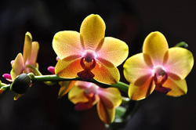
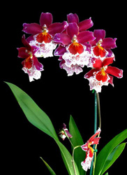
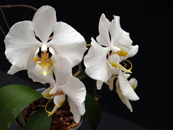
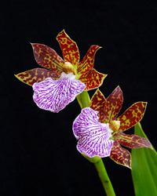
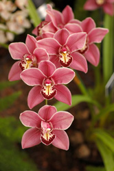

Kylir's Orchid List
The most wanted orchids are at the top. Click on an orchid photo to see a bigger picture.
1. Phalaenopsis Brother Sara Gold

This beautiful moth orchid has lovely orange flower pedals with red speckles and produces a beautiful scent. It flowers year round and often remains in bloom for over three months. The Brother Sara Gold variety grows best in warm temperatures with lots of light. It would make a perfect addition to our upstairs kitchen area. I plan on potting this orchid in a easy-to-drain pot inside a square, glass cube with decorative moss and rocks around it.
2. Vuylstekeara Cambria or Plush

The Vuylstekeara family of orchids grow best in shady, moderate temperatures. Its flowers are often red or purple with a dash of white and last up to two months at a time. I plan on growing a vuylstekeara orchid in the downstairs basement, near a window sill on top of a moist gravel tray. Other varieties in the Vuylstekeara family include Edna, Stamperland, Linda Isler, and Manhattan Red.
3. Phalaenopsis Amabilis

Another moth orchid, the Phalaenopsis Amabilis is a close relative to the Phalaenopsis Brother Sara Gold variety of orchid and as such has the same temperature, light, and watering requirements. However, unlike its cousin, the Amabilis is fragrantless and produces beautiful, white flowers. I particularly enjoy the delicate hair-like whisps that grow off the tips of the blossoms on this orchid. We would put this orchid in a pretty pot in a well-lit upstairs room.
4. Zygopetalum

Orchids from the Zygopetalum family look like orchids from an alien world. The unusual color combinations of purple, greens and browns, together with its scent, appeals to me. Orchids from this family are often vigorous growers and very tolerant. When mature, it will produce a number of spikes with fragrant flowers where each bloom lasts around two weeks. Orchids from the Zygopetalum family grow best in moderate temparatures and partial shade, making it a perfect addition to a downstairs room. Other varieties of Zygopetalum to consider include BG White, Big Country, Centenary, Granite Island, Myponga, and Nairne.
5. Cymbidium Miniature

Cymbidium orchids are popular, fragrant orchids which love cooler temperatures and sunny locations. Most Cymbidiums grow rather large and would not work very well in our home (At least not until Isla would be old enough to not pull apart a plant that was on the floor). That is why I would like a miniature variety of Cymbidium which grows 8-20 inches in height. There are many varieties of Cymbidium orchids and many that will work well for us. They are characterized by being large, leafy orchids with numerous blooms, often with more than 10 blossoms per spike.
{kind=link}
{kind=link}
{kind=link}
{kind=link}
{kind=link}